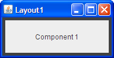
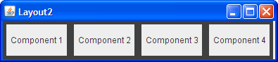
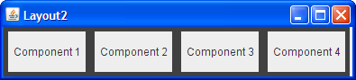
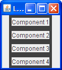
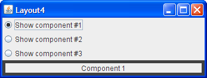
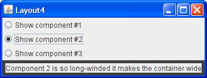
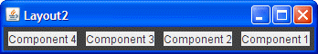

Answers: Laying Out Components within a Container
Questions
In each of the following questions, choose the layout manager(s)
most naturally suited for the described layout. Assume that the
container controlled by the layout manager is a JPanel.
[Hint: Two sections that might help are A
Visual Index to Swing Components and Tips
on Choosing a Layout Manager.]
Question 1. The container has
one component that should take up as much space as possible
|  |
a. BorderLayout
b. GridLayout
c. GridBagLayout
d. a and b
e. b and c
Answer 1: d. BorderLayout and GridLayout
easily deal with this situation. Although you could use GridBagLayout,
it's much more complex than necessary.
Question 2. The container has a row of components that should all be displayed at the same size, filling the container’s entire area.
 

a. FlowLayout
b. GridLayout
c. BoxLayout
d. a and b
Answer 2: b. This type of same-size layout —
whether in a row, a column, or a grid — is what GridLayout
is best at.
Question 3. The container displays
a number of components in a column, with any extra space going
between the first two components.
|  |

|
a. FlowLayout
b. BoxLayout
c. GridLayout
d. BorderLayout
Answer 3: b. BoxLayout lays out
components in either a column or a row. You can specify extra space using
an invisible component.
Question 4. The container can display three completely different components at different times, depending perhaps on user input or program state. Even if the components’ sizes differ, switching from one component to the next shouldn’t change the amount of space devoted to the component.

a. SpringLayout
b. BoxLayout
c. CardLayout
d. GridBagLayout
Answer 4: c. CardLayout exists to
allow components to share the same space. Although it's simpler to use a JTabbedPane
component to control an area, CardLayout is the solution when you
don't want tabs.
Exercises
Exercise 1. Implement the layout
described and shown in question 1.
Answer 1: See Layout1.java .
Here's the code that implements the layout:
.
Here's the code that implements the layout:
JPanel p = new JPanel(new BorderLayout());
p.add(createComponent("Component 1"),
BorderLayout.CENTER);
frame.setContentPane(p);
Exercise 2. Implement the layout
described and shown in question 2.
Answer 2: See Layout2.java .
Here's the code that implements the layout:
.
Here's the code that implements the layout:
JPanel p = new JPanel(new GridLayout(1,0));
p.add(createComponent("Component 1"));
p.add(createComponent("Component 2"));
p.add(createComponent("Component 3"));
p.add(createComponent("Component 4"));
frame.setContentPane(p);
Exercise 3. Implement the layout
described and shown in question 3.
Answer 3: See Layout3.java .
Here's the code that implements the layout:
.
Here's the code that implements the layout:
JPanel p = new JPanel();
p.setLayout(new BoxLayout(p, BoxLayout.PAGE_AXIS));
p.add(createComponent("Component 1"));
p.add(Box.createVerticalGlue());
p.add(createComponent("Component 2"));
p.add(createComponent("Component 3"));
p.add(createComponent("Component 4"));
frame.setContentPane(p);
Exercise 4. Implement the layout
described and shown in question 4.
Answer 4: See Layout4.java .
Here's the code that implements the layout:
.
Here's the code that implements the layout:
...//Where the radio buttons are set up:
for (int i= 0; i < strings.length; i++) {
...
rb[i].setActionCommand(String.valueOf(i));
...
}
...//Where the panel to contain the shared-space components is set up:
cards = new JPanel(new CardLayout());
for (int i = 0; i < strings.length; i++) {
cards.add(createComponent(strings[i]), String.valueOf(i));
}
...//In the action listener for the radio buttons:
public void actionPerformed(ActionEvent evt) {
CardLayout cl = (CardLayout)(cards.getLayout());
cl.show(cards, (String)evt.getActionCommand());
}
Exercise 5. By adding a single line of code, make the program you wrote for Exercise 2 display the components from right-to-left, instead of from left-to-right.
Answer 5: You can change the horizontal orientation
using the
setComponentOrientation method defined by the Component class. For example:
p.setComponentOrientation(ComponentOrientation.RIGHT_TO_LEFT);